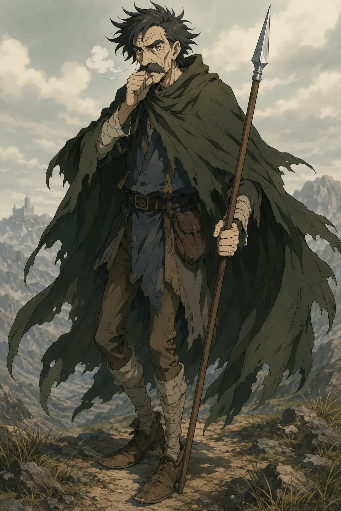
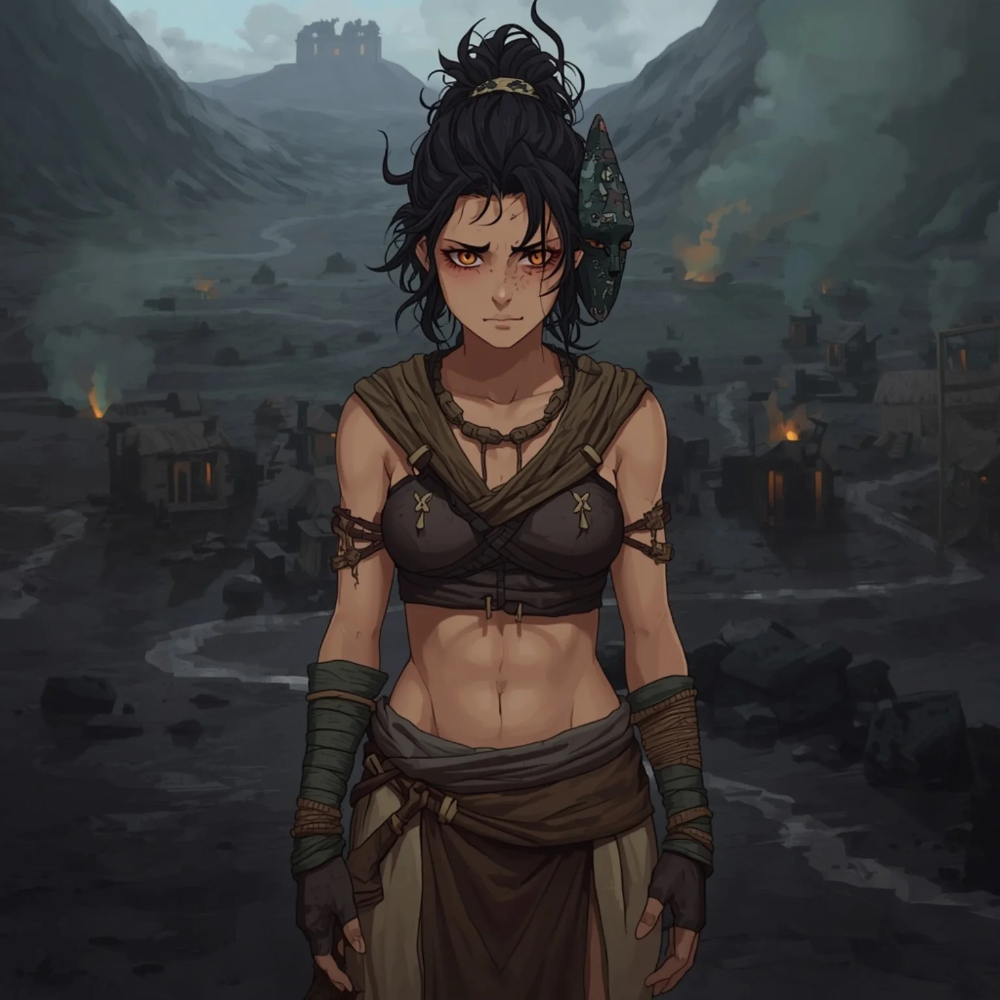
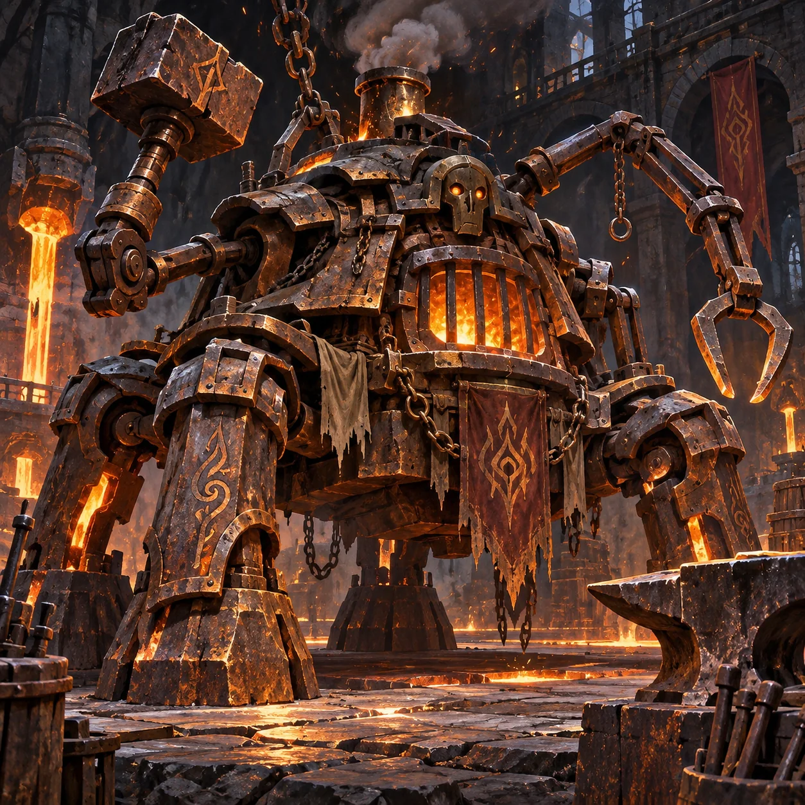
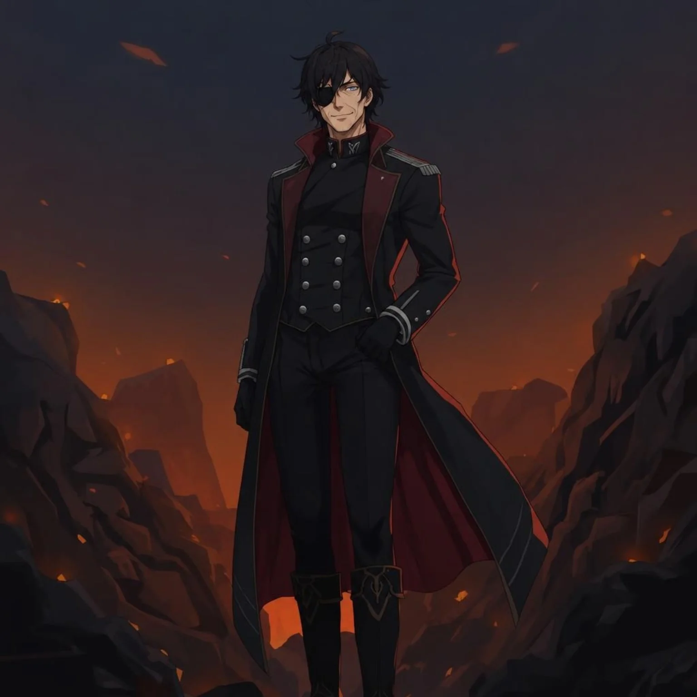

Gruppo 1 · Avventura 10
Le Voci del Fuoco
Avventura per il Master · Ellan 3.0
Luoghi: Chansonne, Valli del Fuoco, Forgiatrice Perduta
Tema: terre sterili, segreti risvegliati, obbedienza e scelta morale
Megariassunto per il Master
Il gruppo lascia Chansonne per indagare sui fumi verdi e sulle rovine riemerse nelle Valli del Fuoco. Durante il viaggio incontra Sertisicon «La Lancia», della Falange di Hotland: è in vacanza dai suoi obblighi, passeggia senza meta canticchiando la sua canzone e intrattiene i personaggi con racconti strampalati e le sue caratteristiche tossi. Viaggia con loro fino al villaggio dei Ghoral, dove rimane.
I Ghoral sopravvivono grazie alla Forgiatrice Perduta. Il Disco Attivatore di oricalco alimenta i rifugi, la condensazione dell'acqua e gli altri sistemi essenziali. Ena la Cenere chiede di placare la Forgiatrice senza spegnerla.
Nel cuore delle rovine, Kasumi riceve dal marchio degli Eterni l'ordine di rubare il Disco. Si oppone apertamente, ad alta voce, senza subire dolore immediato; i PG possono chiederle cosa succeda e, se l'hanno trattata bene, lei rivela l'ordine e chiede aiuto. Dhaem Rust, il Fabbro-Custode, riconosce in Aurora qualcosa che lei non comprende e proibisce agli automi di ferirla. La scelta sul Disco resta ai PG. Dopo l'avventura Halrek incontra Kasumi in segreto.
Antefatto
Monsieur Faurellon de Chansonne ha affidato al gruppo un incarico dopo aver ricevuto una raccomandazione degli Irregolari che ne sottolineava l'affidabilità: raggiungere le Valli del Fuoco, indagare sui fumi verdi e sulle antiche rovine tornate alla luce. Il Primo Armonizzatore ha fornito mappe, provviste e indicazioni sulle prime tappe del viaggio.
La città festosa resta alle spalle. Davanti ai personaggi si estende una regione nella quale qualcosa di antico ha ricominciato a funzionare.
Parte I – Verso le Valli del Fuoco
Da leggere ai giocatori
Il paesaggio cambia lentamente. Il verde lascia spazio a rocce nere e screpolate, solcate da crepe fumanti. L’odore di zolfo brucia le narici. Non ci sono alberi, soltanto pietre, carcasse di costrutti fuse dal calore e forme umane pietrificate, immobili da un tempo impossibile da misurare.
Qui il Mana non canta: vibra male, come una corda spezzata.
Il terreno è percorso da scosse intermittenti. Dietro una collina, antichi costrutti malconci emergono dalla polvere e attaccano senza pronunciare parole né mostrare esitazione.
Un incontro improbabile: Sertisicon «La Lancia»
Il sentiero si snoda tra rocce annerite e crepe fumanti. Il silenzio è interrotto da una voce: qualcuno sta canticchiando allegramente.
Poco più avanti un uomo avanza tranquillo, con una lancia, come se stesse passeggiando in un giardino. Vi vede, sorride e saluta: «Oh! Finalmente qualcuno! Cominciavo a pensare che queste valli fossero disabitate!»
È Sertisicon, detto «La Lancia», della Falange di Hotland. Non è in missione e non sta cercando la Forgiatrice: è «in vacanza», come precisa lui, dai suoi obblighi con la Falange e sta vagando a caso, senza meta. «Ogni tanto bisogna pur prendersi una pausa, no? Non ho ancora deciso dove andare. È questo il bello!»
Durante il viaggio canticchia la sua canzone caratteristica (recuperarne il testo dalla scheda originale, senza inventarlo), racconta avventure sempre più improbabili e le punteggia con la tosse caratteristica, soprattutto quando sorvola su dettagli poco credibili: «Coff! Coff!». Non esplicitare ai giocatori se sta esagerando o mentendo.
Sertisicon si aggrega al gruppo fino al villaggio dei Ghoral. Qui decide di fermarsi a conoscere gli abitanti e a raccontare loro le proprie imprese. Non entra nella Forgiatrice e non interviene nella scelta sul Disco. Lo scontro con i costrutti lungo il viaggio è eliminato; i costrutti restano presenti nel complesso della Forgiatrice, dove contribuiscono al mistero di Aurora.
Parte II – L’incontro con i Ghoral
[Da leggere ai giocatori]
Oltre una collina nera scorgete figure mascherate, con i corpi coperti di cenere e tessuti grezzi. Vi circondano lentamente, parlando in una lingua gutturale. Nessuno solleva un’arma, ma tutti sembrano pronti a difendersi.
Una giovane donna si fa avanti. Si presenta come Ena la Cenere.
«Il fuoco parla. Ma la sua voce è diventata rabbia.»
I Ghoral
I Ghoral sono un popolo ridotto e stremato, custode di rituali molto antichi. Vivono nelle Valli del Fuoco e dipendono completamente dalla Forgiatrice Perduta.
Il Disco Attivatore custodito nella Forgiatrice mantiene in funzione i canali sotterranei di calore che alimentano i loro rifugi, forniscono luce, condensano l’acqua e rendono possibile conservare o produrre il poco nutrimento disponibile. Senza il Disco, i tunnel collasserebbero e nel giro di pochi giorni i Ghoral sarebbero condannati alla sete e alla fame.
Ena non nasconde questa verità. Vuole che il gruppo comprenda fin dall’inizio che spegnere la Forgiatrice o rimuoverne il cuore non sarebbe una vittoria.
I Ghoral consegnano ai personaggi un simbolo runico destinato a «placare la fiamma» e indicano il cammino verso le rovine. Chiedono loro di proteggere la Forgiatrice, non di distruggerla.
Parte III – La Forgiatrice Perduta
[Da leggere ai giocatori]
Le indicazioni dei Ghoral conducono a un complesso scavato nella roccia. Archi spezzati emergono dalla cenere; tubi anneriti percorrono le pareti e simboli elfici corrosi dal tempo affiorano sotto strati di fuliggine.
Il calore diventa opprimente. Nelle profondità pulsa un bagliore arancione, lento e regolare come il battito di un cuore.
La voce nel fuoco è reale. Non è un suono, ma un’eco nella mente: promette potere, creazione e la capacità di riforgiare ciò che è stato spezzato.
Esplorare il complesso
La Forgiatrice non è una semplice fucina. È un sistema antico, ancora parzialmente operativo, composto da condotti, camere rituali e meccanismi alimentati dal Mana. Alcune sezioni sono crollate; altre si attivano al passaggio del gruppo.
Gli ostacoli devono poter essere superati osservando l’ambiente e comprendendo il funzionamento delle strutture: deviare il calore, riaprire un condotto, allineare simboli o usare il segno runico dei Ghoral. Gli errori possono provocare fiammate, crolli o il risveglio di altri costrutti, senza trasformare l’esplorazione in una sequenza di meccanismi legati a uno specifico regolamento.
Più il gruppo si avvicina al cuore della Forgiatrice, più Aurora avverte una familiarità inspiegabile. Non ricorda il luogo, ma alcuni percorsi e alcuni comandi le sembrano istintivamente comprensibili.
Gli automi fuori controllo
Un clangore metallico risuona oltre una porta semidistrutta. Nel corridoio davanti a voi si accendono uno dopo l'altro piccoli bagliori. Figure di metallo annerito si sollevano tra le macerie: giunture spezzate, piastre deformate dal calore, antichi simboli quasi cancellati. Una di esse gira bruscamente la testa verso di voi. Poi tutte avanzano, con movimenti irregolari e minacciosi.
Per il Master — Scontro prima del Disco. Gli automi della Forgiatrice sono fuori controllo e attaccano i personaggi e Kasumi. Sono pericolosi e non esitano a colpire, ma non attaccano mai Aurora, anche quando potrebbero farlo facilmente. Non annunciare questa regola: lascia che emerga dalle azioni degli automi.
Durante il combattimento, predisporre almeno un momento evidente: un automa si trova davanti Aurora, alza il braccio per colpirla, si arresta all'ultimo istante e devia verso un altro bersaglio, magari in una posizione meno favorevole. Un altro può aggirarla o rinunciare a un attacco pur di non ferirla. Il loro comportamento non è protettivo verso il resto del gruppo: continuano a combattere ferocemente.
Se i PG cercano di sfruttare questa anomalia, lasciare spazio alla loro inventiva senza rivelarne il motivo. Aurora è confusa e non sa spiegare perché venga risparmiata. Nessuna spiegazione definitiva in questa scena: il successivo incontro con Dhaem Rust aggiungerà un nuovo indizio.
Il Disco Attivatore
Nel cuore del complesso, sospeso sopra rune incandescenti, si trova un disco di oricalco inserito in un grande meccanismo. È il Disco Attivatore: mantiene viva la Forgiatrice e, attraverso di essa, l’intero sistema dal quale dipendono i Ghoral.
Quando Kasumi vede il Disco, attraverso il marchio degli Eterni riceve un ordine mentale, freddo e imperativo: deve sottrarre l’artefatto e consegnarlo agli Eterni. La comunicazione è unidirezionale: Kasumi può ricevere l'ordine, ma non rispondere attraverso il marchio.
Kasumi si irrigidisce. Fissa il Disco, come se qualcuno le avesse appena parlato all'orecchio. «No!» esclama. Per un istante resta immobile, poi scuote la testa con forza. «Ho detto di NO! Non lo farò!»
Segue un silenzio improvviso. Kasumi guarda il meccanismo, visibilmente turbata, ma non sembra ferita.
Per il Master: fermarsi e lasciare reagire i PG. Se le chiedono cosa accade e l'hanno trattata bene, Kasumi rivela che gli Eterni le hanno ordinato di rubare il Disco e che lei non intende condannare i Ghoral. Può chiedere aiuto. Se è stata trattata con ostilità, continua a rifiutarsi ma non si confida spontaneamente: i PG possono ancora cercare di conquistarne la fiducia.
Regola del marchio: gli Eterni possono trasmettere ordini e sapere se sono stati eseguiti, ma non ricevono risposte, non leggono pensieri e non conoscono i dettagli di ciò che è accaduto o di chi abbia aiutato Kasumi. La disobbedienza non provoca alcuna punizione automatica o dolore a distanza: la punizione sarà inflitta deliberatamente e di persona da un Eterno, nella successiva convocazione a Chansonne.
La decisione iniziale di ribellarsi è di Kasumi. Il sostegno dei PG può rafforzarla, senza sostituirsi alla sua volontà.
Dhaem Rust, il Fabbro-Custode
A custodire il nucleo è Dhaem Rust, un enorme costrutto-fabbro. Il suo corpo è formato da piastre annerite, bracci da forgia e giunture percorse da luce incandescente. Quando si attiva, i suoi occhi si fissano su Aurora.
[Da leggere ai giocatori]
«Tu non tremi. Tu non suoni. Eppure sei riconosciuta. Sei sequenza. Sei matrice. Ma incompleta.»
Il Fabbro-Custode non attacca Aurora. Anche gli altri costrutti si arrestano davanti a lei e modificano i propri movimenti per evitare di ferirla.
Se qualcuno domanda perché, il costrutto risponde soltanto:
«Protocollo interrotto. La fiamma non deve ferire la fiamma.»
Aurora non comprende il significato di quelle parole. La scena deve aggiungere un indizio sul suo mistero, non risolverlo.
Parte IV – La scelta
Il gruppo deve decidere come intervenire sulla Forgiatrice.
Placare la Forgiatrice
Usando il simbolo runico consegnato da Ena e comprendendo il funzionamento del nucleo, i personaggi possono contenere la voce e stabilizzare il sistema senza rimuovere il Disco. La Forgiatrice resta attiva, ma torna sotto controllo. I Ghoral sopravvivono e riconoscono nel gruppo i custodi della loro fiamma.
Distruggere il nucleo
Il gruppo può tentare di spezzare il cuore della Forgiatrice. La distruzione libera Mana instabile, provoca crolli e costringe tutti a fuggire. Alcuni frammenti di metallo antico possono essere recuperati, ma il sistema dal quale dipendono i Ghoral cessa di funzionare. La scelta deve avere conseguenze visibili e non essere presentata come una soluzione priva di costo.
Sottrarre il Disco
Se il gruppo obbedisce all’ordine degli Eterni e rimuove il Disco, la Forgiatrice si spegne. I rifugi dei Ghoral cominciano immediatamente a perdere luce e calore; l’acqua smette di condensarsi e i primi tunnel diventano instabili. I personaggi portano con sé l’artefatto, ma sanno di avere condannato un intero popolo.
Rifiutare l’ordine
Se Kasumi si oppone, non subisce dolore immediato. Il marchio resta silenzioso, ma gli Eterni sapranno che l'ordine non è stato eseguito, senza conoscerne i dettagli. Kasumi teme una futura convocazione e una punizione di persona. È la prima volta in cui sceglie apertamente contro un comando degli Eterni.
Qualunque sia la decisione, il Fabbro-Custode reagisce in base alla sorte della Forgiatrice: difende il Disco da chi tenta di sottrarlo o distruggerlo; se il gruppo usa correttamente il simbolo dei Ghoral, riconosce la procedura e interrompe le ostilità.
Epilogo
[Da leggere ai giocatori]
Le Valli del Fuoco si allontanano alle vostre spalle sotto un cielo velato da fumi lontani. Portate con voi il ricordo della voce nella fiamma, le parole impossibili rivolte ad Aurora e il peso della scelta compiuta nella Forgiatrice Perduta.
Se Kasumi ha rifiutato l’ordine, cammina in silenzio: il marchio non le ha inflitto alcun dolore, ma sa che gli Eterni potranno accorgersi della sua disobbedienza.
Scena conclusiva – Il primo incontro tra Kasumi e Halrek
Scena riservata al Master: l’incontro avviene senza i PG. Il Master può narrarlo ai giocatori come scena parallela, senza attribuirne la conoscenza ai personaggi.
Le valli dormono sotto un cielo color rame. Il gruppo si è accampato tra i resti carbonizzati di un vecchio villaggio; le travi annerite sono ancora dritte, simili a dita levate verso il cielo.
Kasumi non riesce a dormire. Si allontana dall’accampamento e, tra le ombre, vede un uomo alto appoggiato a un masso. Indossa un mantello scuro; una benda nera gli copre l’occhio destro, mentre l’altro brilla come brace.
«I tuoi compagni non ti hanno seguita. Sei sola qui, eppure non ti senti in pericolo. Sai perché?»
Kasumi porta la mano all’elsa, ma non estrae la lama. «Chi sei? Non dovresti essere qui»
«Io non appartengo più ad alcun luogo. Come te. Porti il marchio degli Eterni, ma non il loro cuore. Li hai serviti e seguiti. Talarion si è sacrificato, e loro ti hanno ordinato di condannare un intero popolo. Che tu abbia resistito o abbia ceduto, ora sai quanto vale per loro la tua volontà»
Kasumi non risponde. Nei suoi occhi, tuttavia, la rabbia prende il posto della paura.
«Mi chiamo Halrek. Non tutti gli Eterni sono ciechi. Io e altri come me abbiamo visto la verità e ci siamo tolti le catene. Non siamo più i loro servi e non permetteremo ai Reggenti Bianchi di usare altri come te per i loro giochi»
Halrek le posa una mano guantata sul suo braccio, senza stringere.
«Non ti chiedo di fidarti. Soltanto di ascoltare. Quando verrà il momento, io sarò lì. E tu avrai una scelta»
Poi si allontana e scompare dietro le rocce senza produrre alcun rumore.
Kasumi rimane sola, con il cuore che batte più forte del vento. Per la prima volta, l’idea che gli Eterni possano non essere tutti uguali smette di sembrarle un tradimento e comincia ad assomigliare alla speranza.
Note per il Master
Aurora e Kasumi sono i due fulcri personali dell’avventura. Il mistero di Aurora avanza attraverso il comportamento dei costrutti e le parole di Dhaem Rust; il percorso di Kasumi avanza attraverso il conflitto aperto tra l’ordine degli Eterni e la propria volontà. Se rifiuta di sottrarre il Disco, questa diventa la sua prima ribellione consapevole; se obbedisce, il peso delle conseguenze prepara comunque il suo futuro distacco.
Il destino dei Ghoral non deve essere astratto. Prima della scelta, mostrare i rifugi, le riserve d’acqua e le persone che dipendono dalla Forgiatrice rende chiaro ciò che il gruppo rischia di distruggere.
Gli Eterni devono continuare ad apparire divisi e difficili da interpretare. L’ordine imposto a Kasumi mostra la crudeltà dei Reggenti Bianchi; Halrek introduce invece l’esistenza di dissidenti che hanno rifiutato il loro dominio.
Personaggi dell’avventura — galleria
Seleziona un ritratto per ingrandirlo. Materiale riservato al Master.
_risultato.webp)
.webp)




Fonte: documento originale su Drive. Il testo originale è conservato.